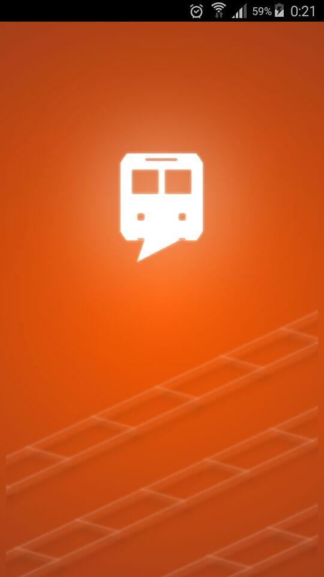
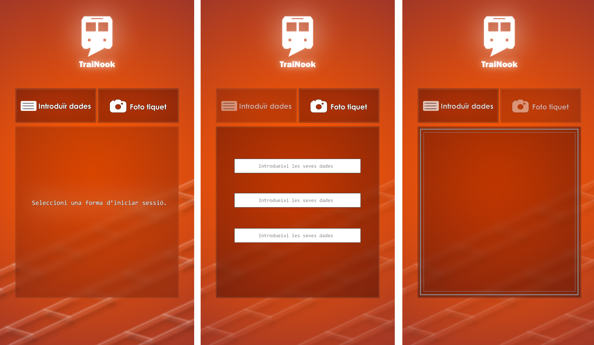
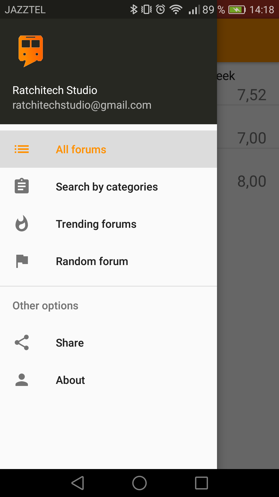
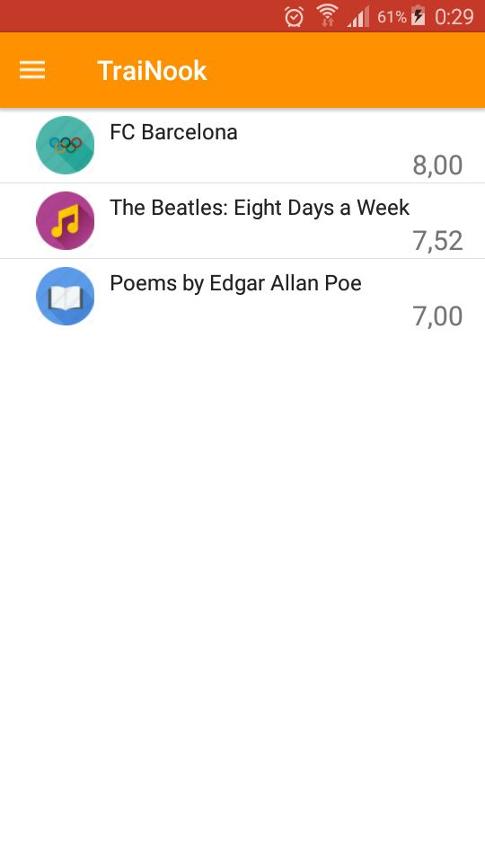
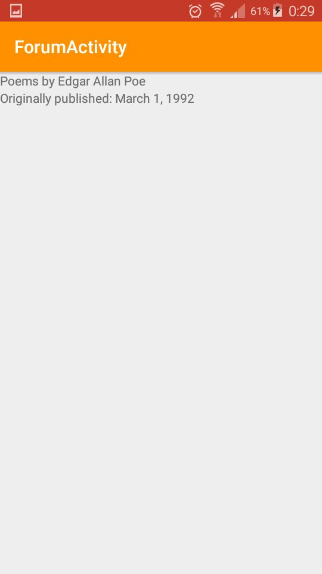
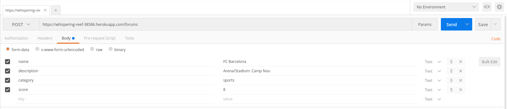

FGC HackApp 2016
TraiNook
Objectiu
Crear una aplicació per als usuaris dels FGC desde la qual podran compartir les seves aficions interactuant entre ells.Qui som?
- Josep de Cid -> Estudiant Enginyeria Informàtica UPC Barcelona
- Franc Auxach -> Estudiant CFGS DAM IES de l'Ebre Tortosa
- Demian Turcan -> Estudiant CFGS Infografia 3D Escola d'Art i Disseny Reus
- Manel Gavaldà -> Estudiant CFGS DAM IES de l'Ebre Tortosa
Descripció general
El nostre projecte consisteix en una aplicació mòbil (de moment android), on la gent podrà accedir-hi mitjançant l'escaneig del bitllet de tren que haurà comprat el mateix dia amb la seva càmera del mòbil. Un cop dins l'usuari podrà compartir opinions sobre les diferents categories d'entreteniments que els altres usuaris de l'aplicació vagin creant.
Punts importants
- Permetrem que els usuaris accedeixin introduïnt les dades del billet manualment pel cas que l'usuari no pugui accedir amb l'escaneig del bitllet.
- Un cop dins de l'aplicació l'usuari estarà connectat a una pàgina de fòrums on podrà crear i accedir a altres fòrums que contindran les seves entrades (diferents opinions sobre el fòrum).
- Cada fòrum està lligat a una categoria, com podria ser la lectura, els esports, la música, el cinema...
- Per evitar informació innecesària, aquestes entrades és borraran al final del dia, i l'endemà els pròxims usuaris que usin l'aplicació podràn crear-ne de noves.
Estructura de l'aplicació
Un cop dins de l'aplicació l'usuari podrà navegar entre els diferents menús i les entrades que tindrà cada fòrum.
A la part esquerra de la pantalla tindrà un menú desplegable on hi hauràn varies funcions de l'aplicació(Fòrums, buscar per categoría, compartir...)
Estructura
- Pantalla de càrrega
- Login
- Menú principal
- Llista de tops
- Menu de navegació
- All forums
- Search by categories
- Trending forums
- Random forums
- Share
- About
A continuació mostrarem captures de l'aplicació i esbossos d'algunes parts:
Pantalla de carga
Login
Menu de navegació
Llista de fòrums
Informació del fòrum (entrades)
Programari utilitzat
Bàsicament l'aplicació està feta usant:
- Back-End -> Ruby on Rails
- Front-End -> Android
- Servidor -> Heroku
Si el projecte us agrada, més avant podem afegir més disponibilitat amb altres dispositius(IOs...).
Funcionament bàsic
Tenim una API creada amb Ruby on Rails que accedeix a un servidor gratuït allotjat a Heroku (de moment).
Cal tindre en compte que, momentàniament, si es volen afegir dades a la base de dades s'han de fer peticions al servidor mitjançant un programari extern.
Utilitzant postman per crear un nou fòrum
Referències
- Github: FGCHackApp2016
- Email: ratchitechstudio@gmail.com
Per acabar
Aquesta només és una idea del projecte ja que per qüestió de temps i de poca experiència, no hem pogut avançar més, i creiem que amb el que tenim de moment ja us podeu fer una idea de com funcionaria l'aplicació un cop finalitzada.
Per supost si teniu qualsevol dubte o suggeriment us agraïríem que ens ho fèssiu saber.
Per últim agraïr també el vostre suport i la possibilitat que ens heu donat per participar al nostre primer concurs :)